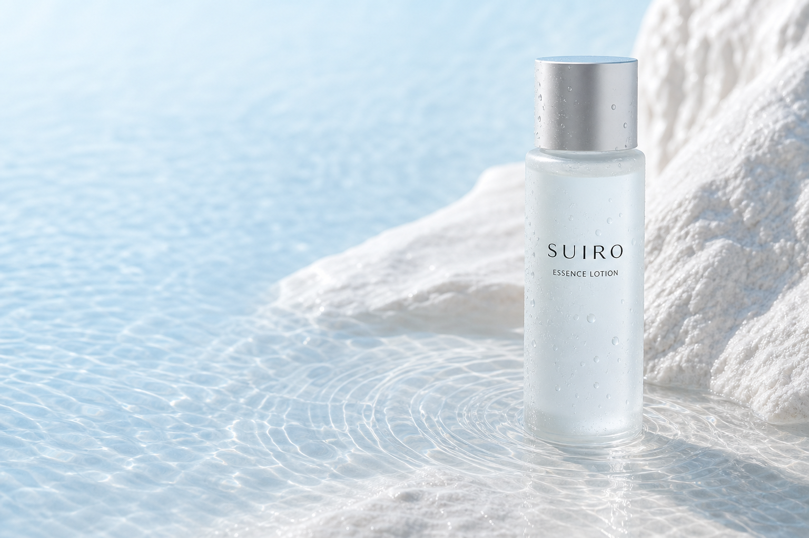
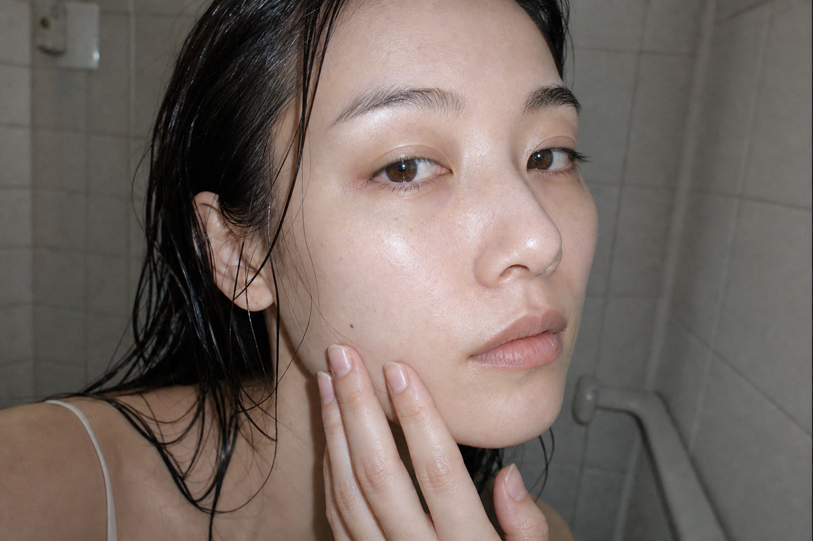
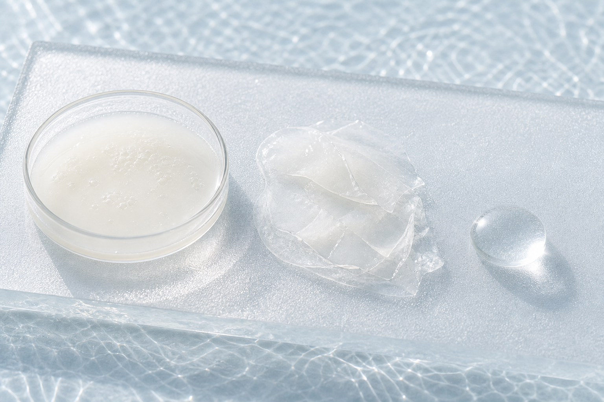
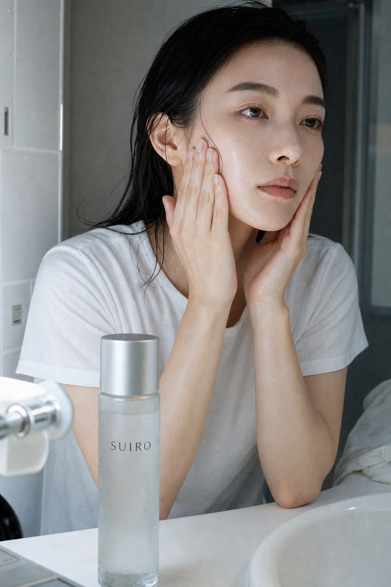
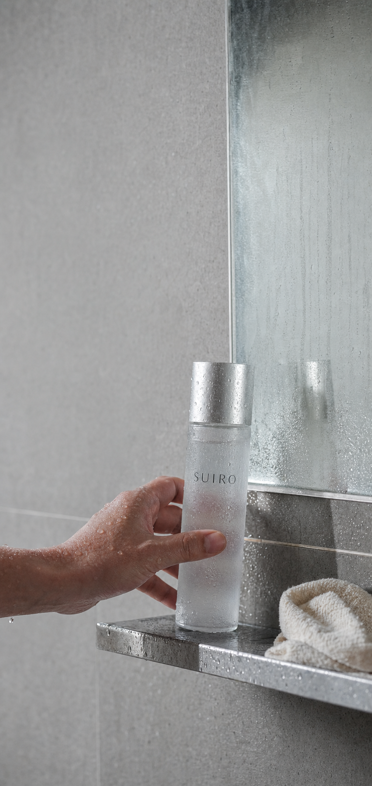

朝の肌に、2回重ねる。
重い保湿は、
もういらない。
水みたいに軽く、あと肌はしっとり。
忙しい朝に使うための化粧水。
SUIRO ESSENCE LOTION
150mL
¥3,520 税込
商品情報を見る↓

01 — MORNING
塗った直後はいい。
でも、メイクする頃には
もう乾いている。
保湿したい。でも、重いものは朝には使いづらい。SUIROは、その小さな面倒から考えた化粧水です。
- ベタつきを残したくない
- メイク前に時間をかけたくない
- それでも、乾燥は気になる
02 — ANSWER
水を、
一枚ずつ。
一度にたっぷりではなく、少量を2回。手のひらで押さえる使い方を想定した、さらっとしたテクスチャです。

03 — FORMULA
入れるものより、
残る感触を選ぶ。
化粧水としての基本を、朝晩続けやすい使用感にまとめました。

- 01
- グリセリン保湿成分
- 02
- ベタイン保湿成分
- 03
- ビオサッカライドガム-1保湿成分
無香料・無着色の製品設計。すべての方に刺激が起きないことを保証するものではありません。

04 — HOW TO USE
洗顔後、
手のひらに2回。
- 01適量を手に取り、顔全体へ。
- 02頬と口元へ、もう一度少量を重ねる。
- 03手のひらで軽く押さえて完了。
朝・夜どちらでも使用できます。使用量は肌の状態に合わせて調整してください。

スキンケアを、06:42 / BEFORE MAKEUP
考えすぎない朝へ。
SUIRO / 01
PRODUCT
SUIRO
ESSENCE LOTION
スイロ エッセンスローション
| 内容量 | 150mL |
|---|---|
| 使用目安 | 朝・夜 / 約1.5か月分 |
| 香り | 無香料 |
通常価格3,520円（税込）
※架空商品のため、決済は発生しません。
LINE / BEFORE YOU BUY
買う前に、
知りたいことだけ。
友だち追加後に届く長い案内はありません。知りたい項目を1つ選ぶ、デモ導線です。
- 01使用感
- 02使い方
- 03配合成分
FAQ
よくある質問
朝だけ使ってもいいですか？＋
朝・夜どちらでも使用できます。肌の状態に合わせてお使いください。
香りはありますか？＋
無香料の製品設計です。
敏感肌でも使えますか？＋
肌質には個人差があります。心配な場合は少量から試し、異常がある場合は使用を中止してください。
どこで購入できますか？＋
このページは架空商品のデザインサンプルのため、実際の販売は行っていません。
朝の肌に、2回重ねる。